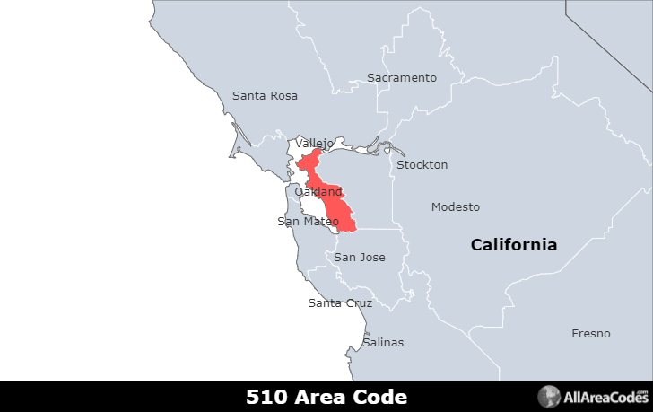
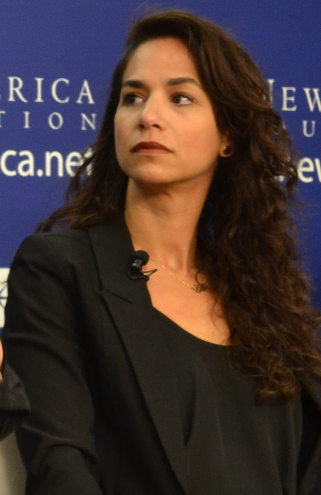
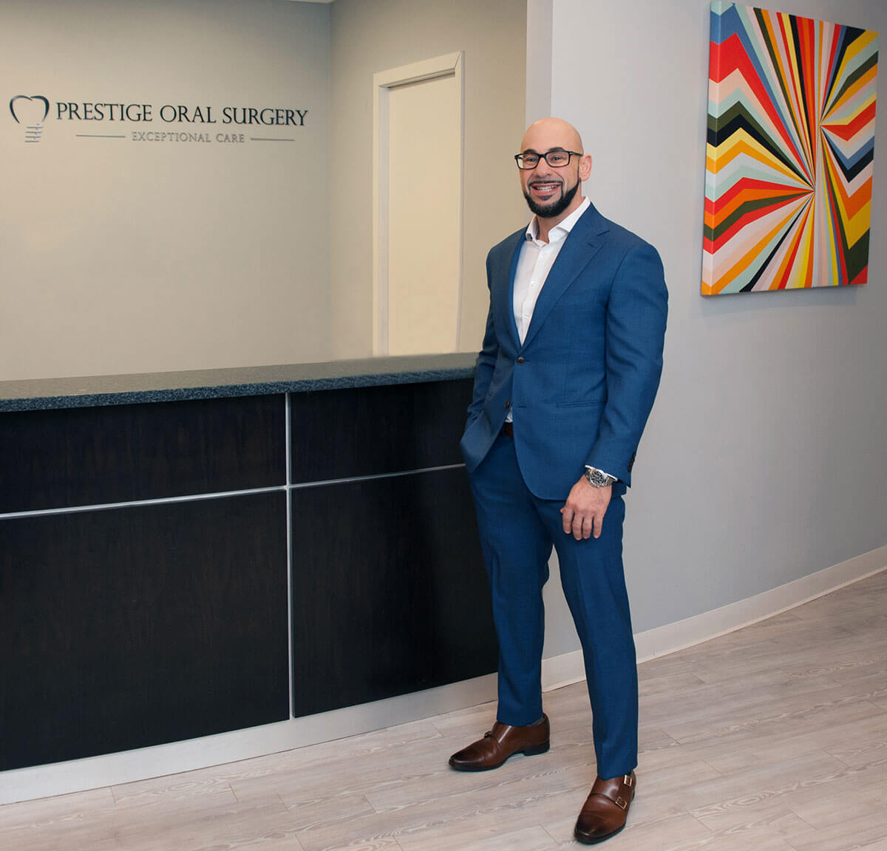
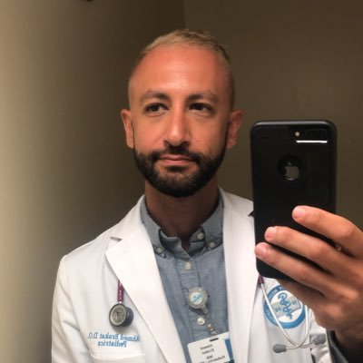

His family and himself lived in Fremont, California growing up with two sustainable parents along
with 3 siblings (two brothers and one sister) and him being the youngest of all 4 in total of
internal blood relations.

From oldest to youngest;
Noura :
This is his oldest sibling being the only sister within the family rooted back to Yousef, she is
a professer, lawyer an activist predominantly advocating for human rights back in her country of origin
known as the middle- eastern country of "Palestine" where her ancestrial roots date back to overall.
She is presently appointed as the associate professer at the university of Rutgers who specialize in the
subject of international studies.
Her education requirements include ones of a (BA and JD) from the university of california, Berkeley along with
an (LLM) from Georgetown university.

Mohammed :
This is his oldest brother, who is an oral prestige surgeon in princeton New Jersey, is a constant
advocate for Fousey's devilish and hellish like lifestyle in calling him out seen on his streams
on the famous platforms formally known as "Twitch" plus "Kick" as well. He is educated at the prestigious
Harvard dental medical school.

Ahmed :
This is his youngest brother who is a pediatrician based in Vallejo, California.
He can speak two langauges including English and Arabic as well.
His medical education includes Kansas City University of Medicine and Biosciences.
He has had multiple interships at health and wellness occupational centres within the area of NY and MO.
